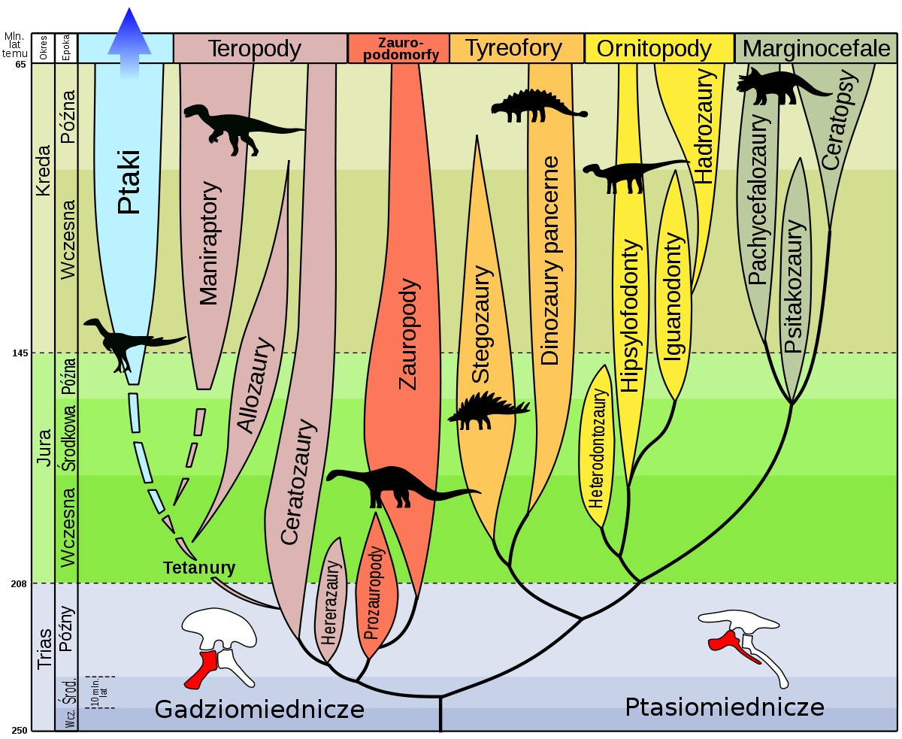

Era dinozaurów- czyli
era mezozoiczna dzieląca się na 3 okresy.

Trias 251-200 milionów lat temu - pojawiły się pierwsze dinozaury właściwe, byli wśród nich niewielcy dwunożni mięsożercy oraz więksi roślinożercy.
Jura 200-145,5 milionów lat temu - w tym okresie występowały liczne gatunki dinozaurów, w tym ogromne dinozaury roślinożerne.
Kreda 145,5-65,5 milionów lat temu - pod koniec epoki dinozaurów na Ziemi żyły obok siebie ogromne dinozaury mięsożerne i opancerzone dinozaury roślinożerne.
Końcem ery mezozoicznej jest „wymieranie kredowe”, czyli zagłada dinozaurów.